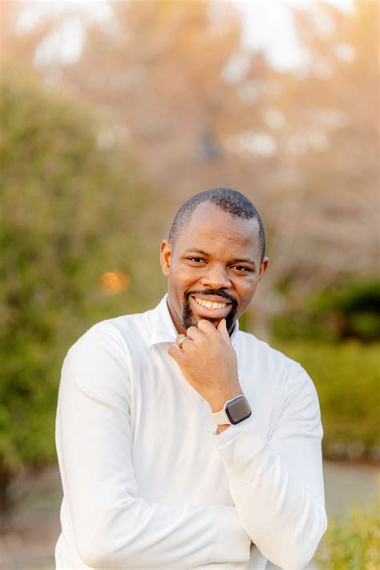
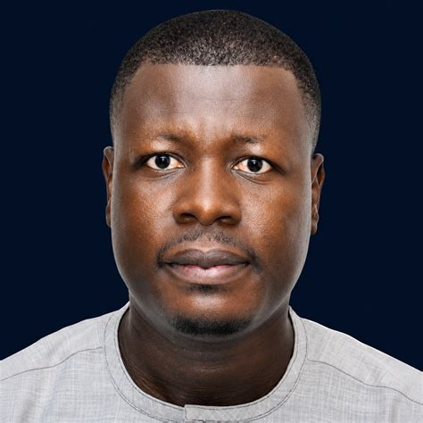
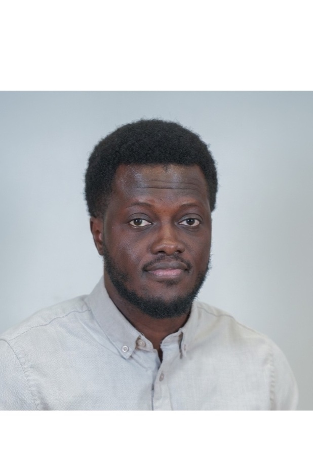
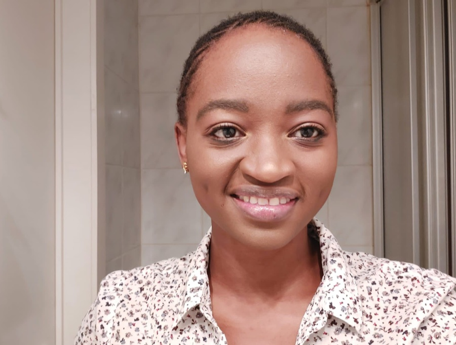
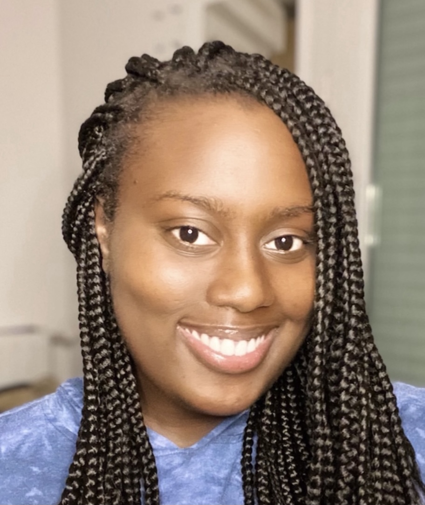

Membres
Les chercheurs, ingénieurs et spécialistes qui contribuent aux travaux de Koraï.
-
 Fréjus Laleye
Reconnaissance et traduction vocales, corpus pour les langues gbe
Fréjus Laleye
Reconnaissance et traduction vocales, corpus pour les langues gbe
- Bonaventure F. P. Dossou Apprentissage actif bayésien, évaluation et IA multilingue · Quantification de l’incertitude · IA pour la santé et les langues peu dotées
-

Salomon Kabongo IA multimodale, extraction d’informations scientifiques et graphes de connaissances -

Sakayo Toadoum Sari Traduction automatique, analyse du discours et raisonnement causal multilingue -

Fadel Thior Reconnaissance vocale, alternance linguistique et modèles pour les langues peu dotées -
 Junior Cedric Tonga
Évaluation des modèles multilingues, raisonnement culturel et IA pour l’éducation
Junior Cedric Tonga
Évaluation des modèles multilingues, raisonnement culturel et IA pour l’éducation
-

Lyse Naomi Wamba Momo Apprentissage automatique pour la santé, apprentissage fédéré et prévision des séjours hospitaliers -
 Foutse Yuehgoh
Apprentissage sur graphes, systèmes de recommandation et évaluation multilingue
Foutse Yuehgoh
Apprentissage sur graphes, systèmes de recommandation et évaluation multilingue
-

Mame Diarra Toure Apprentissage profond bayésien, quantification de l’incertitude et fiabilité des modèles d’IA